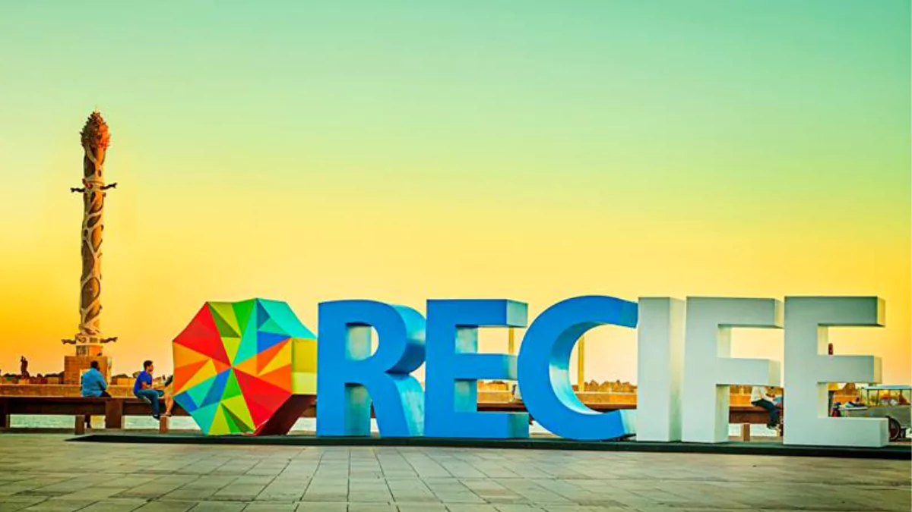

Vamos conhecer um pouco sober a históda dessa linda cidade chamada Recife
História do Recife diz respeito à trajetória histórica da cidade brasileira do Recife, capital do estado de Pernambuco, que confunde-se em muitos momentos com a história do Brasil. A atual área metropolitana do Recife foi palco de muitos dos primeiros fatos históricos do Novo Mundo: no Cabo de Santo Agostinho ocorreu o descobrimento pré-cabralino do Brasil pelo navegador espanhol Vicente Yáñez Pinzón, no dia 26 de janeiro de 1500; e na Ilha de Itamaracá estabeleceu-se, em 1516, o primeiro "Governador das Partes do Brasil", Pero Capico, que ali construiu o primeiro engenho de açúcar de que se tem notícia na América portuguesa. O atual município do Recife tem sua origem intimamente ligada ao município de Olinda. No foral (carta de direitos feudais) de Olinda, concedido por Duarte Coelho em 1537, há uma referência ao "Arrecife dos navios", um lugarejo habitado por mareantes e pescadores. O Recife permaneceu português até a independência do Brasil, com a exceção de um período de ocupação holandesa.
Marco Zero

A Praça Rio Branco, também conhecida como Marco Zero, é um espaço público localizado no bairro do Recife da cidade homônima, capital de Pernambuco. O local fica próximo ao Porto do Recife e abriga o Marco Zero da cidade do Recife. É deste marco que são feitas todas as medidas oficiais de distâncias rodoviárias locais.